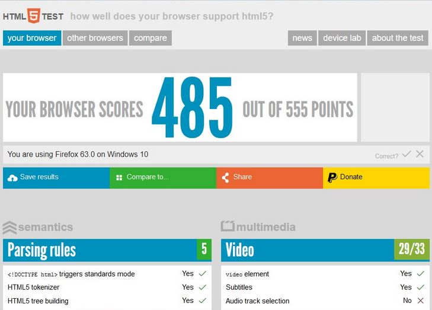

¿Cuál es el propósito de los métodos HTTP: GET, HEAD, POST, PUT, PATCH, DELETE?
- Get: Obtener un documento desde el servidor, solicitar datos de un recurso específico
- Head: Obtener sólo los encabezados para un documento desde el servidor
- Post: Enviar datos al servidor para ser procesados
- Put: Guardar el cuerpo de la petición en el servidor
- Patch: Hacer cambios a un recurso
- Delete: Eliminar un documento desde el servidor
¿Qué método HTTP se debe utilizar al enviar un formulario HTML, por ejemplo cuando ingresas tu usuario y contraseña en algún sitio? ¿Por qué?
- Post, queremos enviar el usuario y contraseña para que sean procesados, de esta manera podremos identificarnos y tener acceso a la cuenta que se lo solicitamos
¿Qué método HTTP se utiliza cuando a través de un navegador web se accede a una página a través de un URL?
- Get, accede al sitio a con el URL
¿Un servidor web devuelve una respuesta HTTP con código 200. ¿Qué significa esto? ¿Ocurrió algún error?
- No, significa que la solicitud fue exitosa
¿Es responsabilidad del desarrollador corregir un sitio web si un usuario reporta que intentó acceder al sitio y se encontró con un error 404? ¿Por qué?
- El error 404 significa que el recurso indicado por el URL no pudo ser encontrado en el servidor. Si es responsabilidad del desarrollador verificar cual es la falla de que el URL tenga problemas y arreglarlo
¿Es responsabilidad del desarrollador corregir un sitio web si un usuario reporta que intentó acceder al sitio y se encontró con un error 404? ¿Por qué?
- El error 404 significa que el recurso indicado por el URL no pudo ser encontrado en el servidor. Si es responsabilidad del desarrollador verificar cual es la falla de que el URL tenga problemas y arreglarlo
¿Es responsabilidad del desarrollador corregir un sitio web si un usuario reporta que intentó acceder al sitio y se encontró con un error 500? ¿Por qué?
- Es un error del servidor, no es responsabilidad del desarrollador
¿Qué significa que un atributo HTML5 esté depreciado o desaprobado (deprecated)? Menciona algunos elementos de HTML 4 que en HTML5 estén desaprobados.
Significa que ya no están disponibles en HTML[11]. Algunos ejemplos:
- acronym
- basefont
- big
- s
- frame
¿Cuáles son las diferencias principales entre HTML 4 y HTML5?
- En HTML 5 existen elementos semanticos , lo cual quiere decir que no es necesario poner etiquetas como div con un id para indicar una parte un “footer”, por mencionar un ejemplo. En HTML5 dejaron de existir atributos como los mencionados en la preguntas anterior. También, en la versión más reciente un nivel más alto de soporte en audio y vídeo
¿Qué componentes de estructura y estilo tiene una tabla?
- Estructura: td, tr, th
- Estilo : Boder, cell padding , text align , span , etc.
¿Qué componentes de estructura y estilo tiene una tabla?
- Estructura: td, tr, th
- Estilo : Boder, cell padding , text align , span , etc.
¿Cuáles son los principales controles de una forma HTML5?
- intput type=”number”
- intput type=”range”
- intput type=”date”
- intput type=”time”
- intput type=”number”
¿Qué tanto soporte HTML5 tiene el navegador que utilizas?

¿Cuál es el ciclo de vida de los sistemas de información?
- Investigación preliminar
- Identificación y especificación de requisitos
- Análisis
- Diseño
- Implementación
- Pruebas
- Corrección
- Mantenimiento
¿Cuál es el ciclo de desarrollo de sistemas de información?
- Identificación y especificación de requitos
- Análisis
- Diseño
- Implementación
- Pruebas